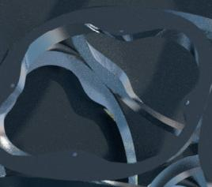

This one day event around the Computational Geometry Algorithms
Library CGAL will bring together CGAL users from academia and
industry, and CGAL developers. The most recent advances in CGAL will
be presented, as well as CGAL's cutting-edge use in research and
development. In addition, there will be ample opportunity to meet in
an informal atmosphere with the CGAL developers.
|
10:00 - 11:00
|
Welcome - Overview - Algorithms under Development
|
|
11:00 - 11:15
|
Coffee Break
|
|
11:15 - 12:45
|
Industrial and Academic User Talks
|
|
11:15 - 11:45
|
Modeling of Cell Shape In Cellular Networks
Thomas DONY, Orange Labs, FT/NSM/RD/RESA/NET/OPS Belfort
Cellular networks comprise a certain amount of transmitters whose
purpose is to provide a radio access in a given area. Each transmitter
is supposed to serve a certain portion of the area. Also they have to
communicate each other to exchange users as they move through the
network. In this talk we will describe how we can model cell shapes
and neighbor relationships with Voronoï diagrams and Delaunay
triangulations.
|
|
11:45 - 12:15
|
Structural Modeling in Geophysics
Sebastien Guillon, Total
The topic of this talk is the generation of surface and volume meshes,
and the modeling of topological relationships between surfaces.
|
|
12:15 - 12:45
|
Improved Hydraulic Models using Airborne Laser Scanning
Johannes Otepka, Christian Doppler Laboratory “Spatial Data from Laser Scanning and Remote Sensing”, Vienna University of Technology.
Using Airborne Laser Scanning precise Digital Terrain Models (DTM) can
be derived which form the basis of high quality hydraulic models. Due
to restriction and limitation of Computational Fluid Dynamic
Simulations DTM data have to be appropriately reduced and adapted to
achieve (meaningful) results. In the DTM reduction step the CGAL
implementation of the Constrained Delaunay Triangulation is used.
|
|
12:45 - 14:00
|
Lunch
|
|
14:00 - 15:30
|
Industrial and Academic User Talks
|
|
14:00 - 14:30
|
Using CGAL for robust planar geometry processing in Agilent ADS
Michiel Dewilde, Agilent
The Agilent Advanced Design System contains the method-of-moments solver Momentum for layered planar (2.5D) electromagnetic problems. Layouts that are just fine for fabrication often contain small features that are undesirable for the EM solver as they complicate adequate mesh generation. The layout clean-up process that is being performed builds on CGAL for robust geometrical processing. We will present our interaction with CGAL's Arrangement_2 class and the acceleration offered by CGAL's filtered predicate mechanism.
|
|
|
14:30 - 15:00
|
3D/4D Image-Based Modeling Using the Delaunay Triangulation
Jean-Philippe Pons, Ecole des Ponts
The topic of this talk is the application of 3D and 4D Delaunay triangulation
to difficult computer vision problems: the automatic 3D reconstruction of a static
scene from photographs, and the spatio-temporal reconstruction of a moving scene from
multiple video sequences.
|
(click here for full picture)
|
|
|
15:00 - 15:30
|
Computational Geometry for Computational Architecture
Jelle Feringa, EZCT Architecture & Design Research
EZCT has worked together in close collaboration with Marc Schoenauer to evolve an architectural envelope, based on specific daylight conditions.
Rather than applying a binary matrix for its genotype, a Voronoï diagram was applied, resulting in a more powerful representation.
This talk will discuss both the potential of computational geometry for architecture and will discuss the current state as well as the future of the CGAL python bindings.
|

(click here for full picture)
|
|
15:30 - 16:00
|
Wrap Up - Questions and Answers
|
|
16:00 - 16:15
|
Coffee Break
|
|
16:15 - 18:00
|
Meet the Developers - Get Demos - Let's Hack
In this session we have a couple of booths where developers give demos
of their CGAL packages, some of which being under development and
scheduled for the next release of the library. The selected demos
cover large areas of the library and give you the opportunity to ask
questions, have a closer look at code, and maybe do some rapid
prototyping together.
|
| |
Arrangements on Surfaces
Ophir Setter and Efi Fogel, Tel-Aviv University
In the illustration you can see an arrangement on a sphere induced by geodesic arcs. It represents the map
of the world. The town of Nancy is represented as an isolated vertex
in the arrangement, and is colored red, while all other vertices are
colored green. Coordinates are taken from Google Earth. This
arrangement, like any other, is ready for point location, overlay
computation, Boolean set operations, etc.
|
|
|
|
Triangulations in Periodic Spaces
Manuel Caroli and Monique Teillaud, INRIA
The goal of our work is to extend the CGAL 3D triangulation package to compute triangulations in 3-dimensional spaces other than R3.
For example, in simulation one is typically interested in having no boundaries. In this case, it makes sense to compute triangulations in
the periodic space T3.
|
|
|
|
Surface and Volume Mesh Generation
Laurent Rineau, GeometryFactory, Mariette Yvinec, INRIA
We present the latest features of the Surface mesh generator which is already a package in CGAL 3.3,
as well as a first version of a tetrahedral mesh generator, which allows to simultaneously generate
iso surface meshes in a grey level image and the volume between these surfaces.
In the picture on the right, you see the Visible Human.
The input voxel data were already segmented.
|
(click here for full image)
|
|
|
Visualizing Arrangements of Algebraic Plane Curves
Pavel Emeliyanenko and Michael Kerber, MPI
We present a online accessible web page that visualizes planar arrangements
induced by arbitrary algebraic curves. Our tool is exact in the sense that it
computes the exact topology of the arrangement, and the plot is always
correct for the chosen resolution.
The website also provides zooming functions, partial selection of curve
segments, and export into a png-file.
Click on the example on the right to see more.
|
(Click here to get to the web site)
|
|
|
3D Boolean Operations
Peter Hachenberger, TU Eindhoven
The definition of Nef polyhedra is the most general polyhedron
definition there is. In contrast to other polyhedron definitions, Nef
polyhedra are closed under Boolean and topological
operations. Consequently, Nef polyhedra can model non-manifold
situations, open and closed boundaries, and lower dimensional
features. We provide an exact and efficient implementation of 3D Nef
polyhedra together with Boolean and topological operations. They have
a great number of application, like computer-aided design, the
Minkowski sum, and the visual hull.
The picture to the right shows a hanging tree from which a part
subtracted, such that it looks cracked. (image courtesy of The Moving Picture Company).
|
|
|
|
Voronoi Diagrams of Ellipses
George Tzoumas, University of Athens
Following the generic programming paradigm, we applied the Apollonius
diagram algorithm in order to compute the Voronoi diagram of ellipses
by supplying the appropriate predicates. This requires adequate
algebraic support for dealing with algebraic numbers of degree 184 or
computing resultants of trivariate systems.
|
(click here to get to the website)
|
|
|
Variational Meshing
Jane Tournois and Pierre Alliez, INRIA
We address the problem of generating high quality simplicial meshes through
optimization techniques.
In 2D, our algorithm interleaves Delaunay refinement and mesh optimization
using Lloyd's iteration. Our experiments improve over other methods by
producing higher quality meshes with fewer Steiner points.
In 3D, we are currently extending the optimal Delaunay triangulations technique
[Chen04] so as to handle domains bounded by piecewise smooth surfaces.
|
(click here for full size image)
|
|
|
The Python Language Binding and Visualization with VPython
Christodoulos Fragoudakis, University of Athens
The CGAL-Python bindings provide robust geometric classes in
Python, which is the language of choice when low level details about
algorithm implementations have to be abstracted.. Our
py.CGAL.visual initiative extends the existing Python-CGAL
bindings and adds visualization. Our main contributions are new
bindings for polygons and kd-trees as well as a custom visualization library
on top of VPython.
|
|
|
|
The CGAL Project
Andreas Fabri, GeometryFactory
Learn more about how the CGAL project works and how it is organized
internally: The Editorial Board, internal releases, the nightly
testsuite, the developer manual, CGAL developer meetings, etc.
|

|
|
You can register
for the CGAL User Workshop when you register for EuroCG'08. There is no
separate registration system. Should you wish to participate only
in the workshop, please check the appropriate box on the
workshop registration
form.
There will be no registration fee for the CGAL User Workshop. However,
you are encouraged to register in order to guarantee your
participation. In particular, there will be complimentary lunch for
registered participants only.
Special thanks to Sylvain Lazard, Anne-Lise Charbonnier, and Mirsada Tihic from Loria, who took care of all local organizational issues.
{kind=link}
{kind=link}
{kind=link}
{kind=link}